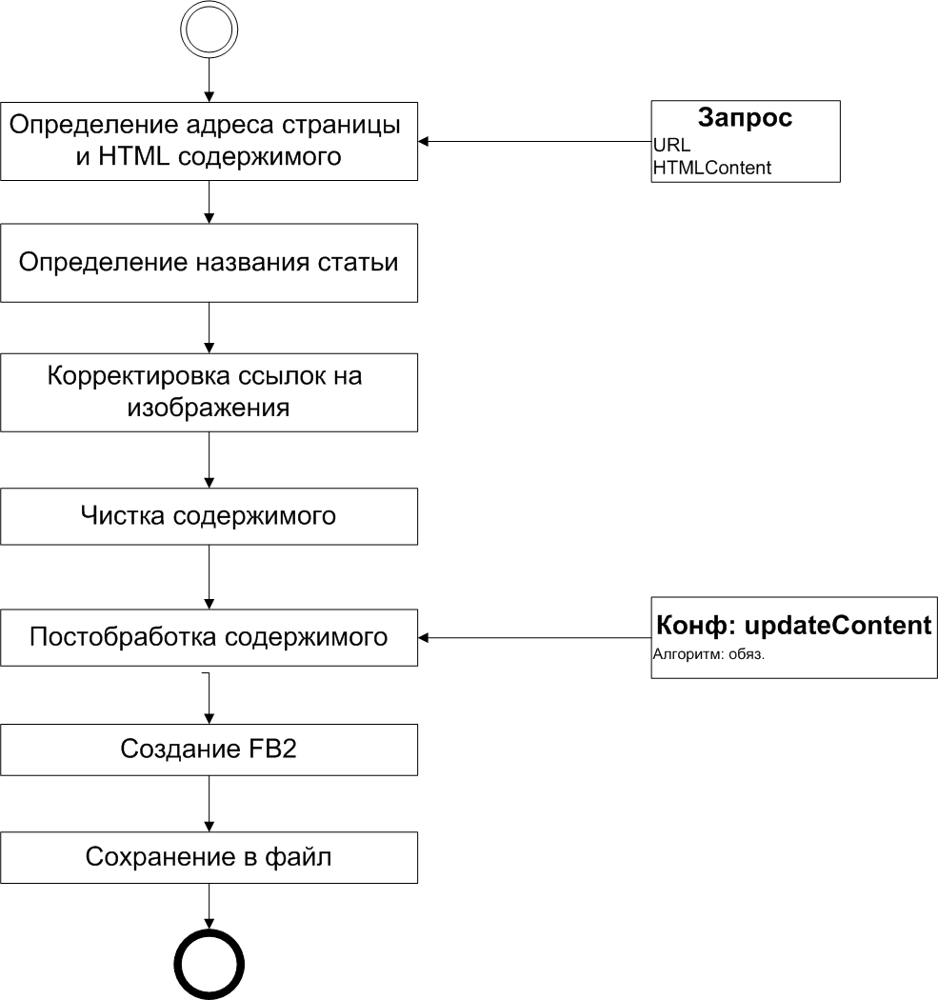

Figure 1. Логика обработки HTML-страницы

В этом разделе описана логика обработки HTML-страницы, шаблон которой
задается декоратором
HTMLDecorator.groovy
. Более детальную информацию по методам декоратора
можно посмотреть в
разделе
HTMLPageDecorator
, либо анализируя код
HTMLDecorator.groovy
. Обработка HTML-страницы состоит из следующих этапов:
-
Определение адреса страницы и HTML содержимого.
Для создания книги необходимо ввести оба этих аттрибута.
URL позволяет загрузить полный код страницы, из которого определяется название статьи.
HTML содержимое - это лишь часть полного кода страницы (обычно, без шапки и футеров).
Для выделения контента статьи удобно пользоваться FireBug.
-
Определения названия статьи
По указанному URL загружается полный код страницы, из которого выделяется содержимое тега title.
-
Корректировка ссылок на изображения
Относительные пути к изображениям заменяются на полные.
-
Чистка содержимого
Из фрагмента страницы удаляются блоки noscript и iframe.
-
Постобработка содержимого
Это опциональный блок, задав который, можно произвести дополнительные действия с содержимым книги.
- Создание FB2. На этом шаге генерируется контент FB2-книги.
-
Сохранение книги в файл. На этом шаге контент сохраняется в файл на
локальном диске в директории
output
.
Ниже приведен пример использования этого шаблона:
//@ description HTML страница
showMessage 'готовим книжку - ждите...'
html()
showMessage 'книжка успешно создана'
Это простеший скрипт, в котором не используется дополнительная обработка контента страницы.
Не надо ждать идеальной отработки скрипта на произвольной страницы. Как правило, в книгу попадает много
"мусорного" кода. Однако, на мой взгляд, для оперативного создания небольшой книги из HTML странички этого достаточно.